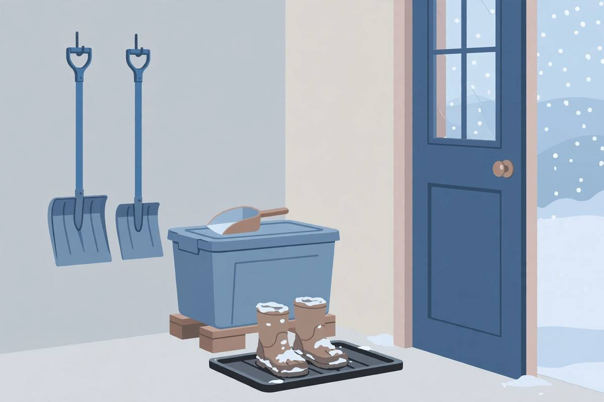

Winter salt and shovel station by the garage door: sealed, raised, and within reach

75 percent is the number that decides whether your ice melt survives the winter. Ice melt salts are hygroscopic, which means they pull moisture straight out of the air, and that absorption starts once the relative humidity around them climbs past roughly 75 percent. A bag slouched open against the garage wall spends the season drinking damp air and turning into a solid lump. The same product, sealed in an airtight bin and raised off the floor, keeps an indefinite shelf life. The difference is not the salt. It is the station it lives in, and the station takes an hour to build.
Job summary
Difficulty is low. There is nothing to build in the carpentry sense: a sealed bin, a raised spot for it, hooks or a rack for the shovels, and a tray for wet boots. Allow an hour, most of it deciding exactly where the station goes. The hire a pro line does not really apply here, but one boundary does. This is household storage. Canada’s Code of Practice for the Environmental Management of Road Salts covers organizations using more than 500 tonnes of road salt a year, and it states plainly that it does not apply to road salts used for domestic purposes. What transfers to a garage is the code’s underlying storage principle, not its rules: keep salt covered and dry, because salt is lost to the environment through storage sites and runoff.
What belongs in the station, and what stays out
The station holds four things. The melt itself, in its sealed bin. A scoop that lives in or beside the bin, so nobody is digging through salt with a coffee mug. The shovels, hung or racked at the same spot, blades up or covered, where a falling shovel cannot land on a car door or a person. And a boot tray or mat at the threshold, because the station is also where meltwater and grit come in on boots.
Two things stay out. The first is a metal container for the salt itself. Chloride salts corrode metal over time, so the bin is plastic, full stop. The second is anything the salt can damage by proximity: keep the station off the workbench wall and away from stored bikes and bare metal tools, and let the boot tray, not the floor in front of the tool cabinet, catch the salty meltwater.
Pick the melt: plain salt or a blended melter
The station works with either product, but they are not the same purchase, and the bag claims need reading with care. An SDS based scorecard of twelve ice melts sold in Canada records Windsor Safe-T-Salt as 100 percent sodium chloride carrying a label claim of minus 15 degrees C, and it puts the practical melting floor of sodium chloride near minus 9 degrees C. The blended option, Alaskan Premium, is recorded at 65 to 85 percent sodium chloride plus 10 to 30 percent calcium chloride, with a label claim of minus 35 degrees C, which is also the figure on the retailer listing. Prices checked at RONA on November 20, 2026:
| Product | Size | Price (Nov 20, 2026) | Label claim | Station note |
|---|---|---|---|---|
| Windsor Safe-T-Salt | 20 kg | C$10.79 | Melts to minus 15 °C (bag claim) | The budget fill for most of the winter; expect it to fade on the coldest nights, when the practical floor near minus 9 °C is what counts |
| Alaskan Premium Ice Melter | 13.5 kg | C$30.49 | Effective to minus 35 °C; gentle on asphalt and concrete when used as directed | The cold snap bag; costs more per kilo, so many households run one of each and reach for this one second |
If the household keeps two products, label both bins with the product type and the date they were filled. Storage guidance is consistent on this point: labelled containers prevent the mix ups, and a pet safer product should never be confused with a heavy duty one.
Tools and materials
- A heavy duty plastic (HDPE) bin or bucket with an airtight, tight fitting lid for each melt product
- A pallet offcut, blocks, or a low shelf to raise the bin off the concrete
- A scoop that stays with the bin
- Wall hooks or a simple rack for the shovels, mounted into studs
- A boot tray or ribbed mat for the threshold
- Labels and a marker: product type and fill date on every bin
Set up the station, step by step
- Pick the spot by the door people actually use. For most households that is the wall beside the house entry door, not the overhead door. The station fails if using it means crossing the whole garage in snowy boots.
- Raise the bin spot off the concrete. Set the pallet, blocks, or shelf first. Concrete wicks ground moisture up into anything sitting on it, and a bag or bin in direct contact spends the winter absorbing that moisture from below.
- Keep the spot away from the damp sources. Not beside a floor drain, not under a window that gets left open, and not against a water heater. Those are the humidity and spill sources the storage guidance names.
- Decant the opened bag into the sealed bin. An opened bag is not a container; its packaging cannot keep humid air out for a season. Pour the product into the HDPE bin, fit the airtight lid, and keep unopened spare bags sealed until they are needed.
- Label the bin before it goes on the shelf. Product type and fill date, on the outside, where it can be read without opening the lid.
- Hang the shovels at the same station. Hooks into studs, blades up or guarded, handles at a height everyone in the household can reach without stretching over the bin.
- Put the boot tray at the threshold. Boots come off on the tray, meltwater stays on the tray, and the tray gets dumped outside rather than across the garage floor.
Keep the salt off everything else
Salt discipline is mostly distance. The bin is sealed, so the loose salt problem is the scoop and the boots. The scoop lives in the bin or clipped beside it, never on the workbench. Spills get swept the same day, back into the bin or out the door, not brushed into a corner to sit against the wall framing. And the car gets the far side of the garage where the layout allows it: the station is a few square feet by one door, and everything salty stays inside those few square feet.
Midwinter check: what working looks like
Check the station once, halfway through the season. The lid seal is intact and the melt inside is still loose and granular. If it has started to cake into clumps, that is the storage failure sign, and a slightly hardened bin can usually be recovered by dropping the sealed container onto a hard surface to break the mass back into granules. The bin is still up off the concrete. The shovels are on their hooks, not leaning against the car. The boot tray is being dumped, not overflowing onto the floor. If those four things hold in January, the station is doing its job, and the same setup, bins labelled and raised, carries straight into next winter.
, Tom Reilly, Home & DIY Writer